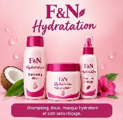

DOUCEUR & SOUPLESSEF&N Hydratation
Une routine pensée pour les cheveux secs qui ont besoin de douceur, d'hydratation et de souplesse au quotidien.
- Accompagne l'hydratation des cheveux
- Aide à améliorer la douceur et la souplesse
- Facilite le démêlage et le coiffage